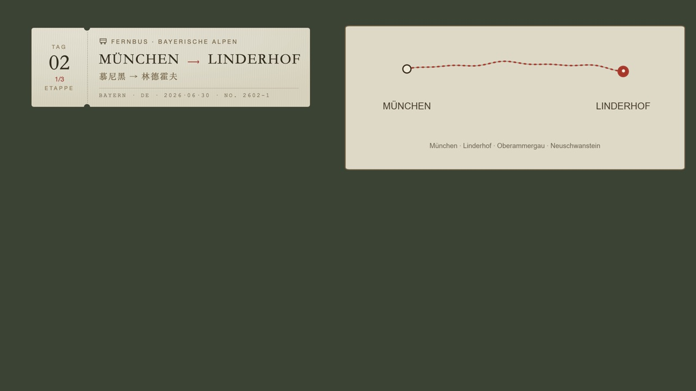
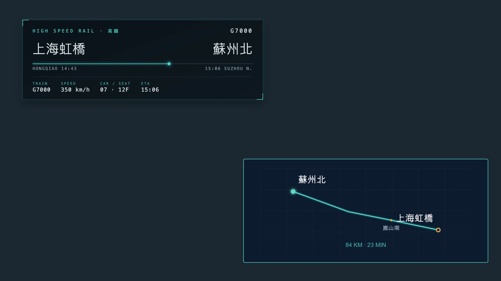
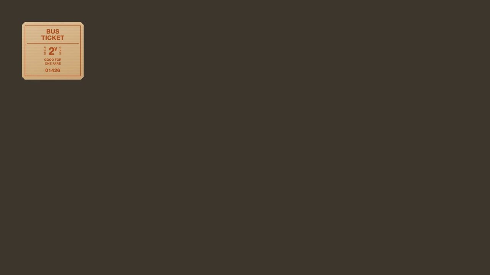
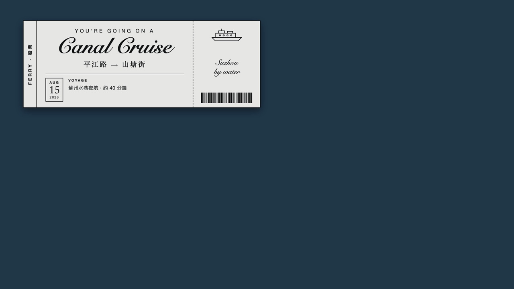
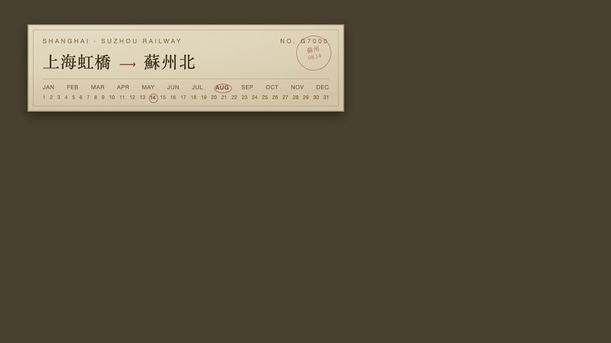

描述標籤版型庫 🎫
2026-07-05 建立 · 2026-08-05 併入長景／霓虹標題那批 · 定位＝版型引用資料庫（James 2026-08-05）
📚 這頁是「引用資料庫」，不是下單頁 —— 收所有疊在畫面上的 overlay 版型，看樣挑款用。
挑好之後去對應的工具下單：
②~③（機票感／遊覽車票／地名條，由 narrative_tag 出）→ 初剪規格選擇器（剪輯工具）
① 雜誌風格標題卡 → 標題選擇器（存變體）
④~⑥ 全場元件／整支版型 → 長篇景色模板（參數鎖定，系列出片）
🔸 下面的「片頭／中場／全場」只是建議時機，不是規定。你要把片頭版型拿去片尾、把全場元件只放中間一段，在 初剪規格選擇器 裡都能自由指定 —— 那邊的描述標籤是動態清單，要幾層加幾層。
🎬 片頭

① 雜誌風格標題卡
影片最前面 5 秒的字幕卡，三層：地名（滿版粗黑體） ＋ 中文草寫一句（日記感） ＋ 規格小字。
對標 Abao Vision 開頭那張。字體／配色跟長景同一套，開場接正片不會斷裂。
→ 16:9 進標題選擇器編輯 ｜ → 9:16 進標題選擇器編輯
適用 所有長片開頭 · 中文草寫＝行楷-繁（James 2026-08-05：「中文草寫比較有日記感」）· 之後可加「對話日記」訊息泡泡
| 級距 | 版型 | 票 | 地圖 |
|---|---|---|---|
| ✈️ 洲際 | ②-A | Passage 白色極簡 | 程式 · 真實世界地圖 |
| 🚌 跨區 | ②-B / B′ | 復古米黃票根 | AI 手繪區域圖／程式手繪示意 |
| 🚄 跨都市 | ②-C | 科技感 HUD | 程式 · 深藍連結圖 |
| 🚏 市內 | ②-D | 牛皮巴士票／剪票根 | AI · 市中心立體手繪 |
| ⛴️ 水路 | ②-E | 黑白船票 | 待定 |
🚦 移動中（照距離分級）

②-A 機票感 ✈️ 洲際／長程
大標班次＋起迄站＋當前地點＋時間（資訊層）；白線稿世界地圖＋虛線航線＋飛機圖示（地圖層）。兩層各自可出。

②-B 遊覽車票 🚌 跨區／一天多段
復古米黃票：左票根 Day／段次、線稿交通圖示＋小字抬頭、襯線大寫起訖＋朱紅箭頭、中文副行、票號 footer。撕票口是真的挖穿的半圓缺口。
地圖：復古手繪區域地圖，路線畫上去、標記滑到終點針。多段行程一段一張。實證：德國 day2（慕尼黑→林德霍夫→新天鵝堡）。

②-B′ 遊覽車票 · 全程式版 🚌
同 ②-B 的票，但地圖也用程式畫：泛黃紙上一條手抖的朱紅虛線、起點空心圈、終點紅針、標記隨影片滑過去。
什麼時候用這個：短程（幾十公里）AI 區域地圖畫不出東西時，或不想等 AI 生圖、要當天出片。

②-C 高鐵票 · 科技感 🚄 跨都市
不走紙票，走月台顯示器／HUD：深色玻璃面板、青色發光細邊、四角準星刻痕、等寬字數據列（車次／時速／車廂座位／ETA），中間一條行程進度軌。
地圖：深藍平面向量連結圖 — 淡藍網格、青色發光路線、琥珀節點、白色大寫站名，路線照真實 GPS 走。
ticket_style:"tech" ＋ map_style:"tech"適用 高鐵／城際列車（James 2026-08-22：「跨不同城市間的移動 就用這種科技感一點」）
→ 去初剪規格選擇器設定

②-D 市區捷運巴士 · 懷舊剪票 🚏 同一都市內
老車票兩款可選：
牛皮巴士票（圖）— 切角、粗黑體全大寫、票號兩側直排、GOOD FOR ONE FARE
剪票根 — 左邊超大路線號、右緣被剪票鉗咬掉圓孔、斜蓋「剪訖」紅章
kraft / punch）· 🗺️ 地圖＝AI 生：市中心立體手繪地圖，地標做成 3D 等角小建築、照當地建築特色畫→ PR-007 市中心立體手繪地圖 ｜ → 去初剪規格選擇器設定

②-E 船票 ⛴️ 渡輪／遊船
黑白高對比禮券感：左直排標籤、花體大標、日期方塊、右票根船身線稿＋條碼。白底黑字疊在深色水景上特別跳。

②-F 復古蝕刻車票 🎟️ 任何交通工具
維多利亞古董車票：雙線外框、月份＋日期格把出發日圈起來（一眼看出哪天走的，比插畫更有資訊）、右上圓形紅印。
不綁交通工具，想要濃一點的年代感就用它。
📍 景點

🎞️ 全場背景（整支都在）

④ 音波緞帶 ＋ 點陣 LED 曲名
音波緞帶：44 條細線疊正弦波做出緞帶扭轉，振幅跟著音樂音量走
（ffmpeg 的 showwaves 做不出來，自己畫的）。
點陣 LED：字縮成 9 排點陣、每格畫圓點，暗燈留很淡的白看得到燈板網格，曲名一格格往左跑。
🖼️ 整支版型（長篇景色模板用）

⑤ 長景版型（橫式 16:9）
風景陪伴長片用。大標題滿版＋左清單／右中文副標左右對稱＋底部音波緞帶／點陣 LED 曲名／JT 標。 文字層只顯示 4 秒，底部效果全片保留。

⑤-B 長景版型（直式 9:16）
同一套版型的直式版，不是把橫式壓扁：左右兩欄改上下堆疊、副標置中、 清單移到左下角齊頭靠左、字級各自放大。

⑥ 霓虹標題（文字夾在人物後面）
人像片用。四個字塊＋七款霓虹配色，文字被人物擋住——用 macOS Vision 逐幀去背， 本機跑不用付費 API。🚨 一律拿原生 4K 去背，遮罩才細。
規劃中（陸續補上）
🎞️ 中場 · 對話日記過場
左下角訊息泡泡一句句跳出來（「嗨，我是 James」「現在是阿姆斯特丹的下午兩點」）。 Abao Vision 最有效的一招：兩小時沒旁白的片，靠四句話就有「有人陪你」的感覺。
⑦ 建築卡
建築名＋風格＋年代，接歸檔的建築風格關鍵字（例「哥德式｜科隆大教堂」）。
⑧ 郵戳／明信片感
地名＋座標＋日期，像護照蓋章。
⑨ 餐券／收據感
店名／菜名，票根收據質感。
在那裡勾「關鍵字分類」（移動中/建築/飲食…），勾了就展開對應版型設定，複製規格貼給 Robert，Robert 出透明 ProRes 圖層。＝版型庫看樣挑款、初剪選擇器下單設定。